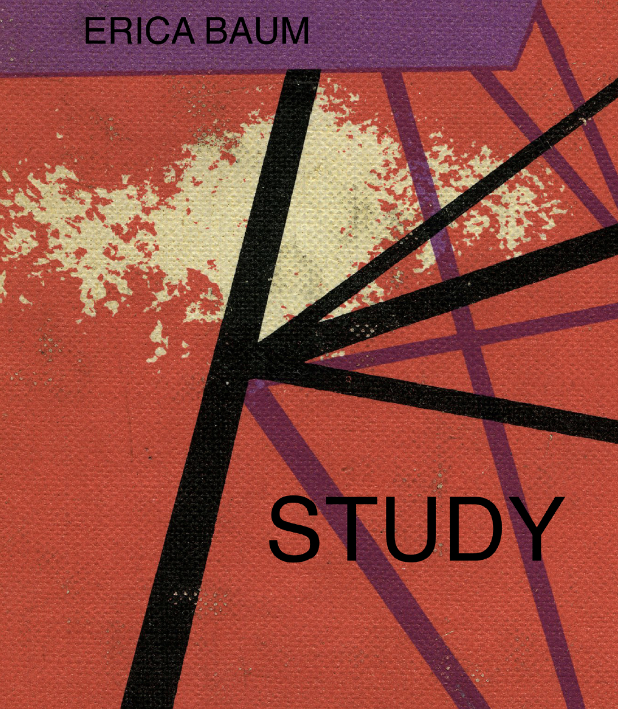
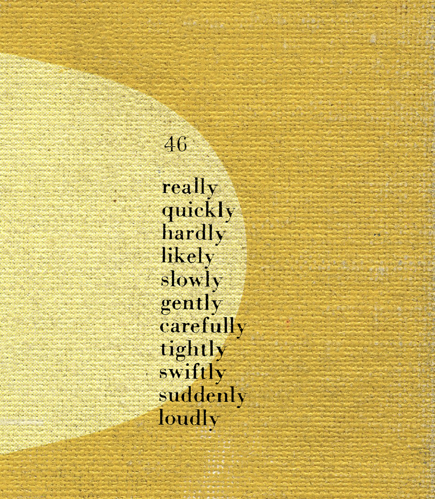
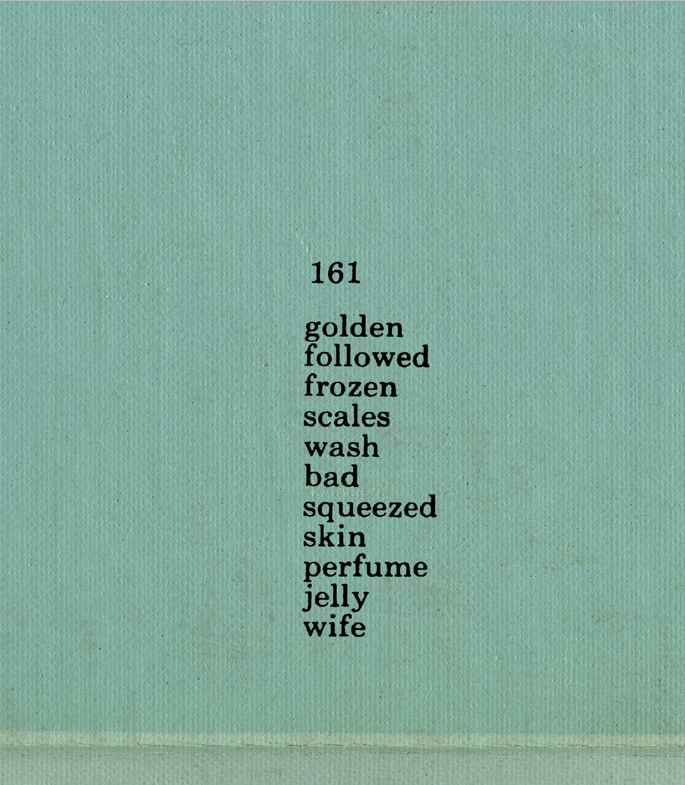
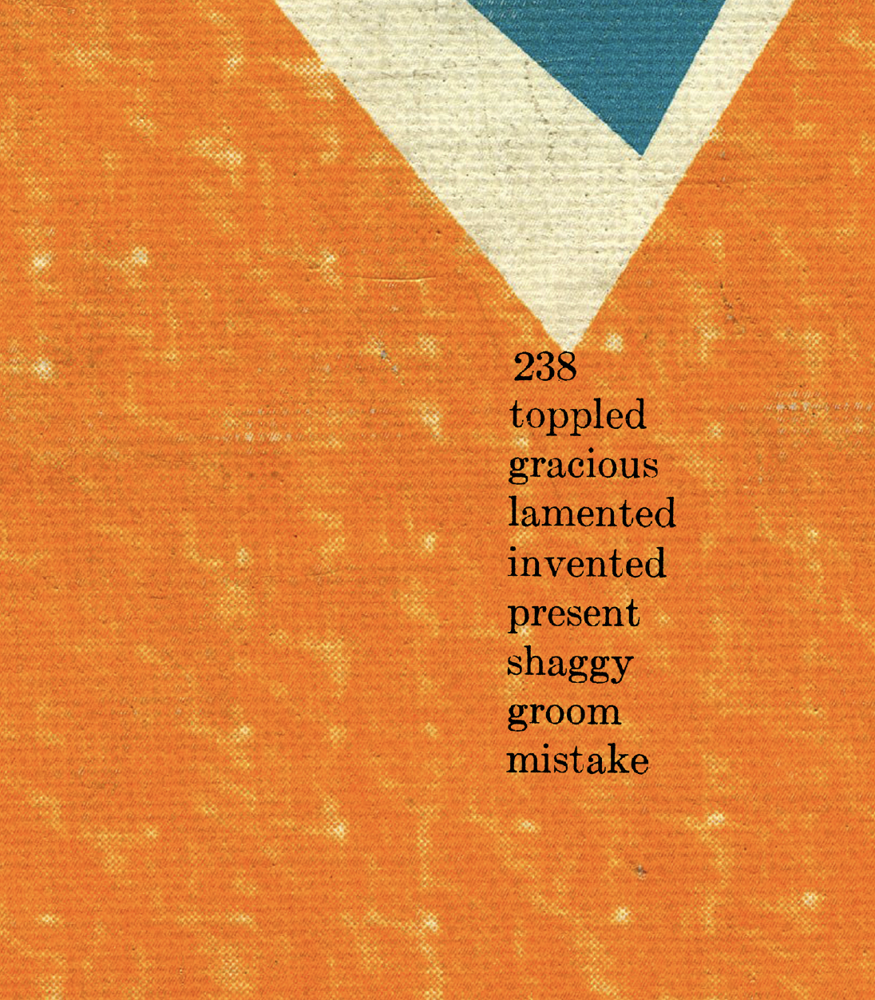
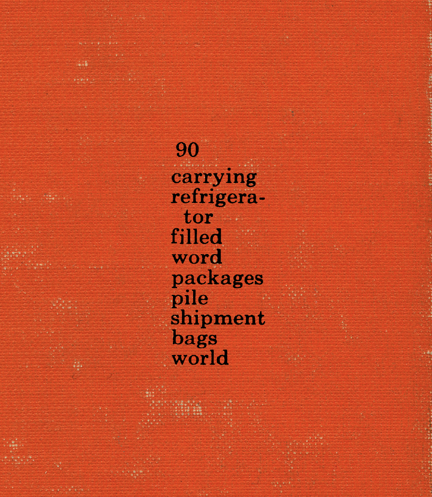

Repost idea:
My aim is to capture texture and display it on a digital surface. As Baum photographed hardcover books, I'd like to film everyday objects found around the house in macro. To add another level of texture, sounds can be recorded too. The film will be uploaded to Youtube.
"I'm interested in working with words that have already been employed. And with this in mind I'm always on the look-out for found text. This situation of the text, its context, is always significant to me. I had noticed and been intrigued for a long time with the lists of words at the back of children's readers. The numbers would indicate where the word could be found in the story and sometimes a star might emphasize the importance of word for further study. In a manner similar to my earlier project with indices these lists of words to 'study' both reflect the stories in the books and taken out of their usual roles can take on a life of their own. At times as I initially viewed them and began collecting them they seemed to be calling out with their own stories and rhymes hinting at a more subversive life, not between the lines (of the original story) but within them. By isolating these lists and presenting them out of context I can let this 'other' poem/story emerge. The backgrounds come from selected details on the covers of many different hard cover readers. They are cloth bound painted and shellacked and my reproduction of them highlights their beat up textures and vivid colors. There's a juxtaposition between the bright happy world of this imagery and the absurd dark indications in the poems."
-Erica Baum
Find out more about it here.
See the repost here.
     Back to home